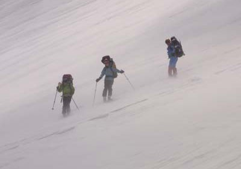
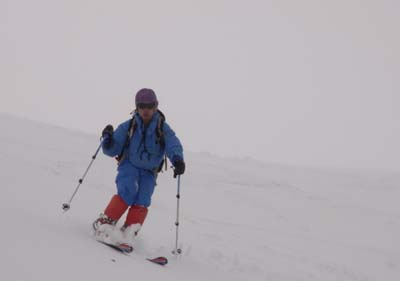
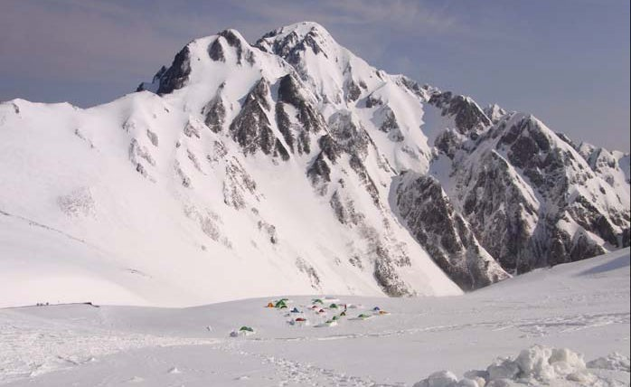
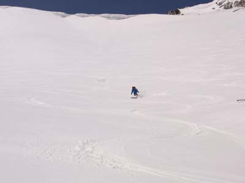
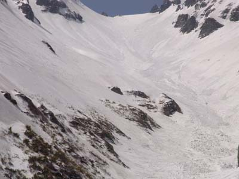
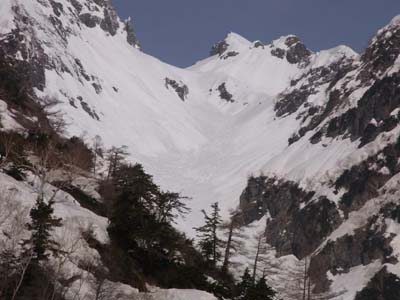
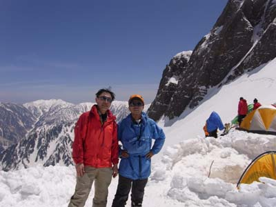
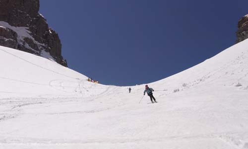
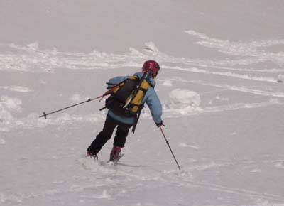

|
|||||||||||||||||||||||||||
|
剱沢定着山行 |
| 実 施 日 | ２０１０年４月２９日～５月４日 | |||
| リーダー | 山田和人 | |||
| 報 告 者 | 山田和人 | |||
| HP制作 | 高井(紀） | |||
| 参加者数 | ４名 （会員１名、非会員３名） | |||
| 気の合った仲間で剱岳周辺の谷を楽しもうと定着合宿を計画。 長次郎谷別山沢等も計画していたが、前半の悪天で入山に3日を費やしたため 真砂沢と三ノ窓雪渓の滑降を楽しんだ。 |
| １日目 ４月２９日 （吹雪→雪） |
| 室堂(9:30-12:40)→雷鳥平TS(13:20) テント泊 |
| 室堂へのバスが弥陀ヶ原付近で視界不良のため一時立ち往生。室堂にて天候回復を待つ。 視界が開けたので出発するも、別山乗越は強風が予想されたため、雷鳥平にて沈とする。 |
| ２日目 ４月３０日 曇 (強風） |
| 起床(6:00)→雷鳥平TS発(8:20)→クトー装着(9:10)→１名滑落(10:10)→別山乗越(12:10) 剱御前小屋泊 |
| 雷鳥坂は登るにしたがい、風が強まる。斜面は所々凍結。途中で一名がバランスを崩し、20m程滑落するも怪我なし。別山乗越付近は視界が悪く、ルートが少し東にずれてしまい、乗越の東側の尾根に出た。剱沢側はさらに視界が悪く、剱御前小屋にて15時過ぎまで待機するも回復しないため、小屋泊りとする。 |
| ３日目 ５月１日 ガス→晴れ |
| 起床(6:00)→別山乗越発(8:15)→剱沢TS着(8:40)→雪練(10:20-11:30)→剱沢TS発(12:50)→クロユリのコル(13:45-14:15)→剱沢TS着(14:25) テント泊 |
| 別山乗越の視界は200m～300m効いたことと、山岳警備隊が剱沢までのルートに赤旗を打っててくれたので、滑降開始。到着時点では、剱沢テントサイトは3張のみ。テント設営隊と雪練隊に分かれる。 天候が回復してきたので、4人で足慣らしに出る。クロユリのコルからの滑降は雪がよく、気持ちよく滑れた。剱沢は夕方にはテント村となった。夜半、風が強まり、テントが大きく揺れる。 |
|  | A |  |
| 雷鳥沢登り | 剱沢足慣らし |
| ４日目 ５月２日 晴れ |
| 起床(5:30)→剱沢TS発(8:30)→別山乗越(9:00-9:20)→別山(10:20)→真砂乗越手前(10:40-10:50)→真砂沢出合（11:40-12:40)→剱沢TS着（15:10) テント泊 |
| 4人で真砂沢へ向かう。別山乗越からは、スキーをリュックに着けてアイゼン歩行。別山からの剱岳は雪を纏って美しい。稜線は風がある。真砂乗越から標高差50m程北寄りの稜線からドロップイン。1000mの大滑降を楽しむ。真砂沢出合直前のゴルジュ以外はデブリもなく、快適であった。出合にて鱒寿司・鰤寿司とビールでゆっくりしてから、剱沢TSまでの700mを登り返した。夜は、昨夜以上の強風。 |
|  |
| 朝の剱岳と剱沢TS |
|  | A |  |
| 真砂沢滑降 | 出合から平蔵谷 |
| ５日目 ５月３日 晴れ |
| 起床(5:30)→剱沢TS発(6:50)→真砂沢出合（7:05-7:20)→二股(7:40)→Ⅴ-Ⅵ峰ルンゼ（10:00)→三ノ窓雪渓のど下部（10:50)→三ノ窓(12:00-12:15)→二股（12:55)→剱沢TS着（17:00) テント泊 |
| 朝になり、強風は間欠的になる。三ノ窓を目指す。剱沢の斜面は、硬かったが、快適に飛ばす。二股の手前で沢が割れていたが、しっかりしたスノーブリッジがあり、難なく渡れる。二股からは約1000mの登りが見通せ、シールを着けてひたすら登る。 八峰Ⅴ-Ⅵ峰コルからのルンゼ出合付近でいったん、傾斜は緩む。両岸が狭まる辺りは、30度以上の傾斜となるが、シールで越えた。先行パーティーが、滑降しながら小雪崩を起こす。深さ10～20cm、長さ100m程のゆっくりしたものであった。三ノ窓には、テントが5～6張あり、チンネ登攀の声が聞こえた。三ノ窓からの展望もそこそこに、下りにかかる。上部は傾斜がきついが、先行パーティーの雪崩跡を快適に滑る。ゴルジュから下は、両岸からのデブリを避けながら滑降ルートを選ぶ。下部は雪が腐り、思うようにスキーが回せない。二股から、約800mの登り返しで体力を消耗した。 |
|  | A |  |
| 二股から三ノ窓 | 三ノ窓 |
|  | A |  |
| 三ノ窓雪渓上部滑降 | 三ノ窓雪渓中間部滑降 |
| ６日目 ５月４日 曇 |
| 起床(6:00)→剱沢TS発(8:50)→別山乗越(10:20-10:40)→雷鳥平(11:10)→室堂(13:00) |
| 夜半、また風が出ていたが、朝には、弱まり撤収に支障はなかった。疲労が溜まっていたこともあり、別山乗越までゆっくりと登る。雷鳥坂には人が多く、それを避けるようにして滑降、雪はよくなかった。雷鳥荘から雷鳥平まで、特設のTバーリフトが掛っており、それを利用。 室堂は観光客でごった返していた。 |